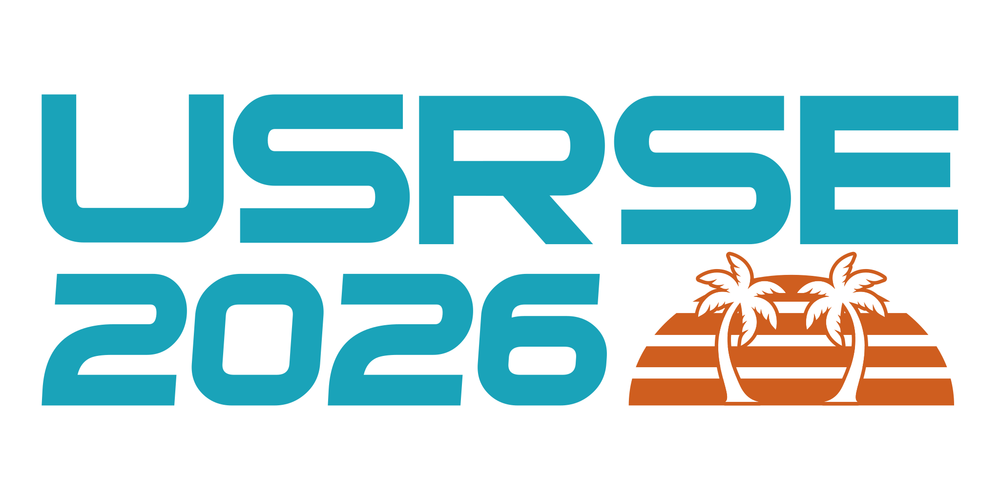
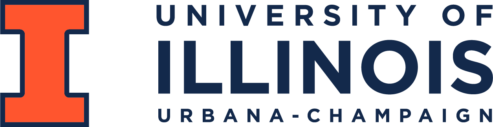
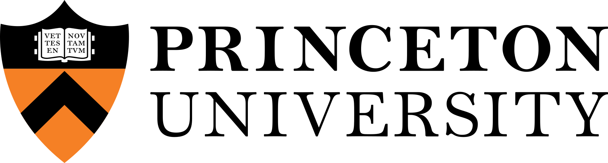
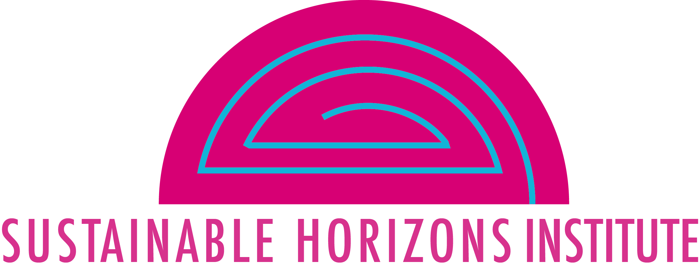
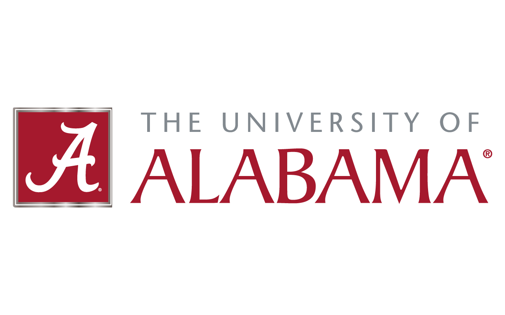
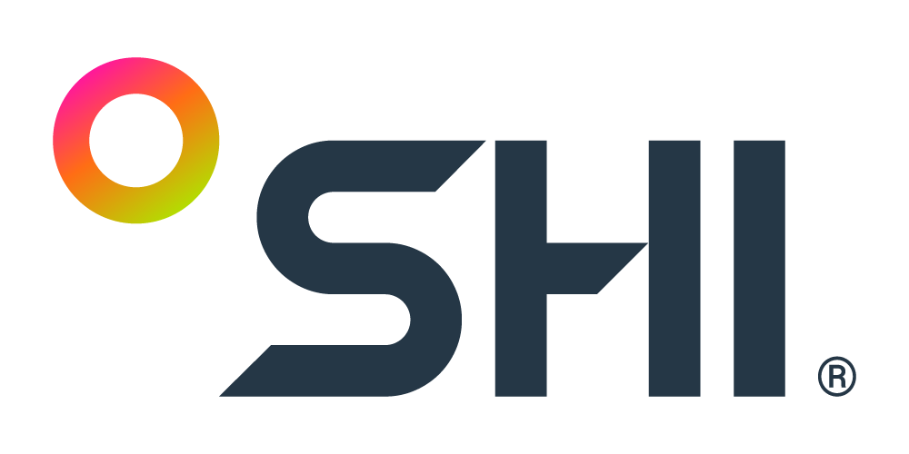

San Jose, CA · October 19–21, 2026
Full program details and abstracts
https://us-rse.org/usrse26/program/
Placeholder. The General Chairs replace this file with their welcome letter before the program is printed, and remove placeholder: true above. Plain Markdown paragraphs, emphasis, strong, and links are supported; links print as their text.
Alex Koufos and Keith Beattie General Chairs, USRSE'26
All conference participants are expected to abide by the Code of Conduct. Please report problems or concerns to coc@us-rse.org.
https://us-rse.org/usrse26/about/code-of-conduct/
Full program details and conference policies: https://us-rse.org/usrse26/
Full abstracts and presenter names are in the online program: https://us-rse.org/usrse26/program/
Registration, Prefunction
Welcome and Plenary Session, San Jose Ballroom Salon 3 & 4
Keynote: Fernando Pérez
Morning Break (Sponsorship available), Anywhere
Panel, San Jose Ballroom Salon 3 & 4
Student & Early Career: Careers in RSE: Experiences from Research Software Engineers Across Industry, Academia, and Laboratories
RAG Assistants, San Jose Ballroom Salon 1 & 2
Case Studies Demonstrating RSE Impacts Part I, San Jose Ballroom Salon 5 & 6
AI Assisted Code Development, Willow Glen Room
Lunch Break (Sponsorship available), San Jose Ballroom Salon 3 & 4
RSE Team Operations, San Jose Ballroom Salon 3 & 4
Birds of a Feather: Navigating RSE Team Operations: Leadership, Sustainability, and Emerging Challenges
Daniel Madren, Geoffrey Lentner, Laura Theademan, Chris Bentley, Christina Maimone, Ian Cosden, Sandra Gesing, Adam Rubens, David Pettifor, Elizabeth Leake, William Cowen, Abbey Roelofs and Daniel Shown
Institutional RSE Community, San Jose Ballroom Salon 1 & 2
Birds of a Feather: Building an Institutional RSE Community
Julia Damerow, J.C. Subida, Alex Koufos, Daniel Woulfin and Trevor Spreadbury
Better Scientific Software Fellowship, San Jose Ballroom Salon 5 & 6
Birds of a Feather: Better Scientific Software Fellowship Community
Adam Lavely, Elsa Gonsiorowski and Mary Ann Leung
Threat Modeling for Research Software Systems, Willow Glen Room
Workshop: A Group Attempt at Threat Modeling for Research Software Systems
James Davis, George K. Thiruvathukal, Jeffrey Carver, Kelechi G Kalu and Alexandra Harris-Watson
Afternoon Break (Sponsorship available), Anywhere
Interactive Computing and Reproducible Workflows, San Jose Ballroom Salon 1 & 2
Lessons from Training Users & RSEs, San Jose Ballroom Salon 5 & 6
AI + Software Quality, Willow Glen Room
Poster Reception, San Jose Ballroom Salon 3 & 4
Registration, Prefunction
Plenary II, San Jose Ballroom Salon 3 & 4
Morning Break (Sponsorship available), Anywhere
Making AI Sustainable: Token Economics, San Jose Ballroom Salon 3 & 4
RSE Practices in the Age of AI Part I, San Jose Ballroom Salon 1 & 2
The Human Factor, San Jose Ballroom Salon 5 & 6
HPC + AI, Willow Glen Room
Lunch Break (Sponsorship available), San Jose Ballroom Salon 3 & 4
Working Group Fair (Presentations during lunch), San Jose Ballroom Salon 3 & 4
RSE Skill Training, San Jose Ballroom Salon 3 & 4
Birds of a Feather: How to train an RSE: A discussion of RSE skill training - past, future, and present
Ellianna Abrahams, Lauren Milechin, Jeffrey Carver, Daniel Woulfin, Patrick Diehl and Gabrielle O'Brien
User Experience: Journey Mapping, San Jose Ballroom Salon 1 & 2
Workshop: Journey Mapping: A technique to see opportunities and recognize gaps in user experience
Johanna Cohoon, Rajshree Deshmukh, Md Hasan Shahriar Simanto, Mary Goldman, Katrina Turner, Sarah Poon
Improve Research Outputs by Improving Institutional Collaboration, San Jose Ballroom Salon 5 & 6
Birds of a Feather: How can institutional RSE hubs and OSPOs work together for the betterment of research outputs?
William Gearty, Jeffrey Young, Collin Capano, Ian Cosden, Daniel S. Katz, Richard Littauer, Fang Liu and Daniel Shown
Refactoring Code for Reuse and Impact, Willow Glen Room
Workshop: Fixer-Upper Software: Refactoring Code for Reuse and Impact
Brian Ward and Jeff Soules
Afternoon Break (Sponsorship available), Anywhere
Case Studies Demonstrating RSE Impacts Part II, San Jose Ballroom Salon 1 & 2
Code Modernization Using AI, San Jose Ballroom Salon 5 & 6
Workflows, Willow Glen Room
Registration, Prefunction
Plenary III & Sponsor Talks, San Jose Ballroom Salon 3 & 4
Announcements, US-RSE Updates, US-RSE Awards, BSSw Fellowship Awards
Morning Break (Sponsorship available), Anywhere
Collaboration & Community Building, San Jose Ballroom Salon 1 & 2
Software Quality, San Jose Ballroom Salon 5 & 6
Generative AI + Applications, Willow Glen Room
Lunch Break (Sponsorship available), San Jose Ballroom Salon 3 & 4
RSE Practices in the Age of AI Part II, San Jose Ballroom Salon 1 & 2
Reflections on RSE Roles & Pathways, San Jose Ballroom Salon 5 & 6
Building Infrastructure for Communities or Organizations, Willow Glen Room
Transition Break, Anywhere
Rapid Access Microtalks (RAM), Closing Remarks, San Jose Ballroom Salon 3 & 4




